Visual Asset Inventory — kiranrao.ai
A single document covering every visual asset on the site — shipped, in-progress, and planned. Formatted as a hand-offable spec sheet: each asset has its purpose, deploy location, technical specs, naming convention, output folder, and creative direction. A designer (or AI image generator) should be able to produce any asset to spec from this document alone.
Color palette
All assets pull from this palette. UI base + 6 persona accents. oklch defined as primary; hex as fallback (see VISUAL-STANDARDS.md §2).
Core palette
Persona accents
Typography
Two-family system. Playfair Display (serif) for hero / accent / brand moments. Inter (sans) for body and UI. Per-card stat fonts for bento differentiation.
Character cast — the monster system
9 anthropomorphic monster characters, one per content type. Pixar / Monsters Inc DNA. Each has a persona accent color, an animal archetype, and a defined role. Used in bento cards, persona picker, and OG cards.
Aesthetic systems (parallel, scoped per surface)
The site uses two distinct visual languages, each scoped to specific surfaces. Mixing them creates fragmentation; keeping them scoped creates intentional depth.
- Pixar / Monster system
- Used on: bento cards, persona picker, OG cards, error page imagery, hero scene. Characterized by: warm fuzzy character illustrations, golden-hour lighting, Pixar-quality painterly aesthetic, narrative scenes. The site's primary identity layer.
- Mid-century editorial
- Used on: marketing kit case study (parked, lives in Under the Hood), profile banners, social media campaign concepts, mood board, handout. Characterized by: Saul Bass / Paul Rand / Charley Harper inspired flat geometric shapes, restrained palette, designer-credible. The brand-system layer.
Hero image
The full-bleed image at the top of the homepage. Currently a static painterly studio scene with a sleeping Bernese mountain dog. Will be replaced with a cinemagraph (see Video section).

| Asset | Status | Purpose | Where deployed | Specs |
|---|---|---|---|---|
| Hero scene | shipped | Full-bleed homepage hero. Painterly Pixar-style studio with Bernese mountain dog, Golden Gate Bridge in window, cork board, sketchbook, monitor glow. | Top of index.html (lines 147-152, in a <picture> element) |
File: images/final-hero-image3.png + .webp Aspect: ~21:9 (responsive) Format: PNG + WebP Style: Pixar painterly, warm golden hour, tilt-shift quality |
Favicon set
Multi-size icon set + PWA manifest. Generated via realfavicongenerator.net.
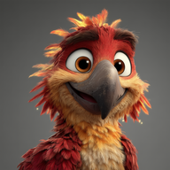
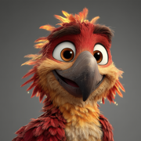
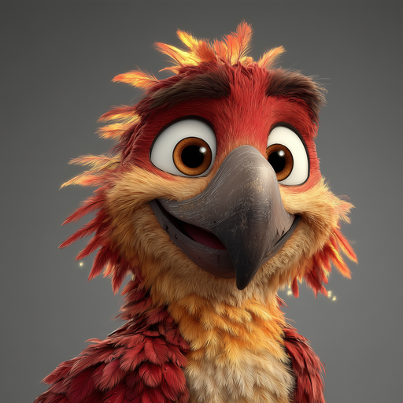
| Asset | Status | Specs | Output |
|---|---|---|---|
| favicon.ico | shipped | Multi-resolution ICO (16, 32, 48px) | images/favicon/favicon.ico |
| favicon.svg | shipped | Modern browser pinned tab support | images/favicon/favicon.svg |
| favicon-96x96.png | shipped | 96×96 PNG | images/favicon/favicon-96x96.png |
| apple-touch-icon.png | shipped | 180×180 PNG · iOS home screen | images/favicon/apple-touch-icon.png |
| web-app-manifest-192 | shipped | 192×192 PNG · PWA install | images/favicon/web-app-manifest-192x192.png |
| web-app-manifest-512 | shipped | 512×512 PNG · PWA install | images/favicon/web-app-manifest-512x512.png |
| site.webmanifest | shipped | JSON manifest · name "Kiran Rao", theme #0a0a0a | images/favicon/site.webmanifest |
Logo / wordmark
| Asset | Status | Specs | Output |
|---|---|---|---|
| Logo | shipped | PNG · used on site nav · format/dimensions TBD audit | images/logo.png |
Bento card art (63 combos · 23 unique images)
Per-persona-per-slot character illustrations across 9 cards × 7 personas. Each persona renders a different combination of cards in different slots. Some images do double-duty across slots; some are persona-specific.
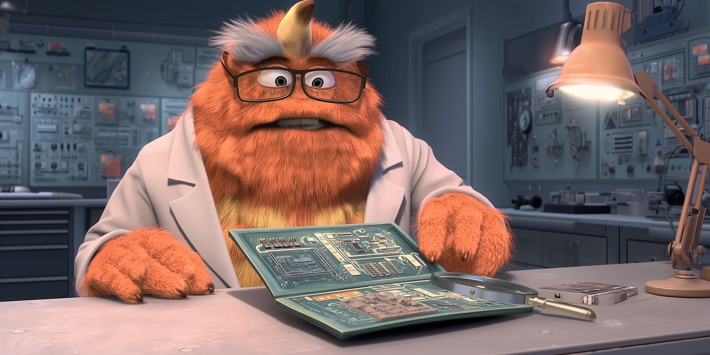
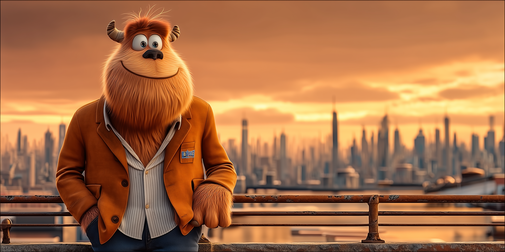
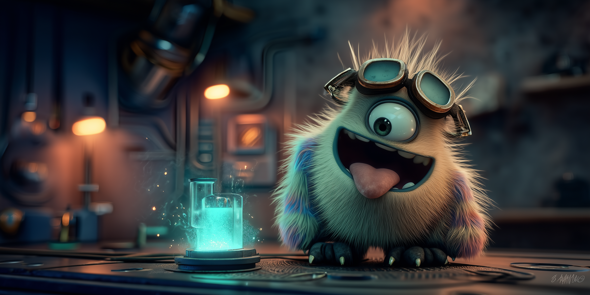
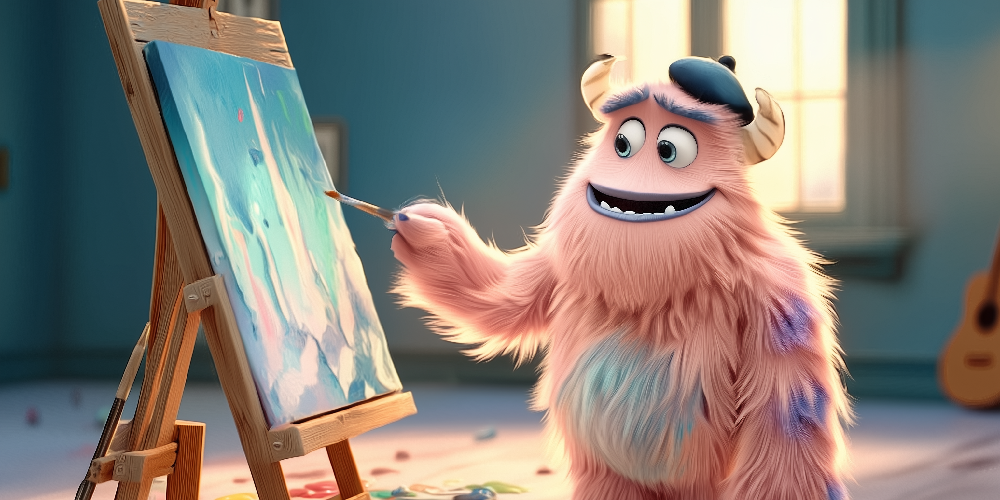
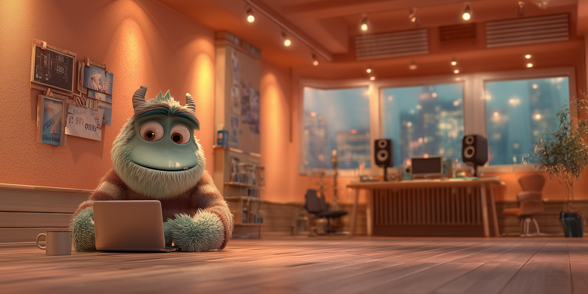
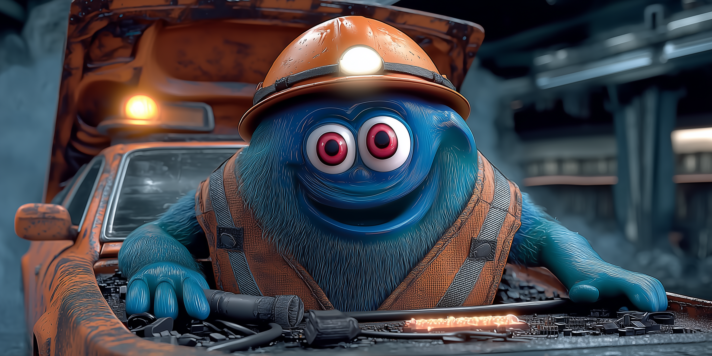
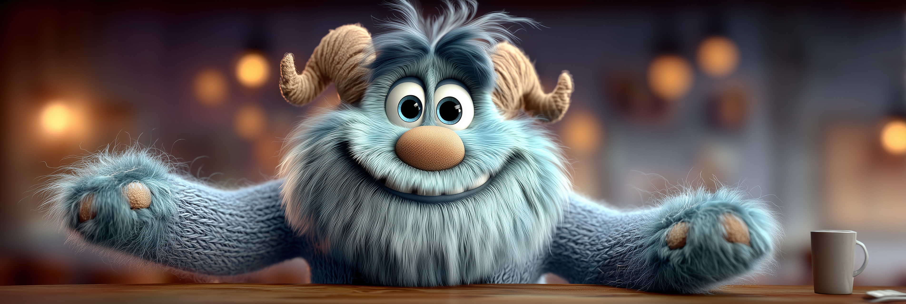
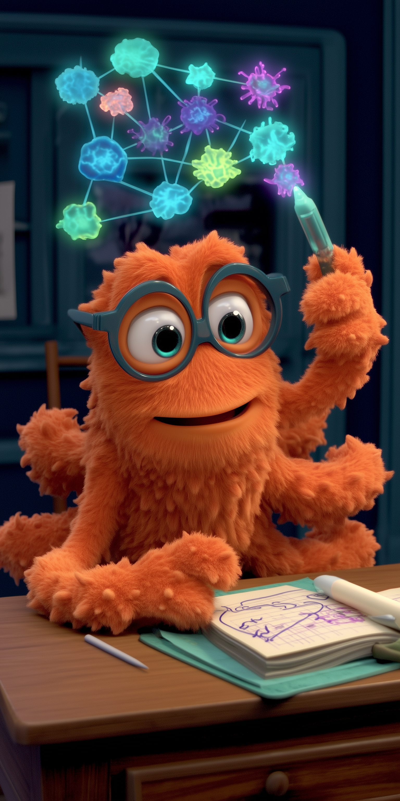
- Status
- shipped — 23 unique images covering all 63 combos. Documented in
docs/Website/Homepage/Bento/BENTO-CARD-GAMEPLAN.md. - Output folder
images/(flat — noimages/bento/subfolder)- Naming pattern
[character]-[slot]-[ratio].png(e.g.analyst-tall-3_2.png,veteran-hero-2-1.png)- Aspect ratios per slot
- hero: 2:1 · topright: 1:1 · widel: 3:1 · wider: 3:1 · tall: 3:2 · center: 1:1 · skills: 1:2 · blog: 2:1 · now: 4:1
- Style direction
- Pixar / Monsters Inc quality. Warm golden-hour lighting. Each character in their thematic environment. Composed to leave a clean dead-zone for the glassmorphism overlay text. See
docs/Website/Homepage/Bento/BENTO-MONSTER-SCENES-V6.mdfor full per-character prompts. - Generation tool
- Midjourney v7 with style ref to
sref-pixar-style.jpg+ omni ref per character.--sw 350-400,--ow 25-50. - Overlay system
- Glassmorphism content card placed in the dead zone (positions: pos-tl, pos-tr, pos-bl, pos-br, pos-bc). Per-card position locked in
cardData.overlayPosinbento-cards.js. Card contains: eyebrow, stat (per-card font), description, tags.
Persona picker portraits (6)
Full-body character portraits for the persona selection screen. 3:4 aspect ratio. Used as the primary persona identification on first load.


| Asset | Status | Character | Color | Output |
|---|---|---|---|---|
| Evaluator | shipped | Merritt Hunter · recruiter, charcoal blazer, tablet | #7B9ACC | images/evaluator-merritt.png/.webp |
| Seeker | shipped | Phil · operator, mid-career exploration | #8A8580 | images/seeker-phil.png |
| Practitioner | shipped | Drew · senior PM / design lead | #4DAF8B | images/practitioner-drew.png |
| Learner | shipped | Paige · earlier-career PM | #A07ED4 | images/learner-paige.png |
| Technologist | shipped | Ray · engineer / founder | #cb5c72 | images/technologist-ray.png |
| Inner Circle | shipped | Keshav · friend / former colleague | #cb6923 | images/innercircle-keshav.png |
OG share cards (9 per content type)
Per-content-type social link previews. 1200×630 (1.91:1). Generated programmatically by compositing existing bento heroes with a thin cream bottom band carrying eyebrow + title + byline.
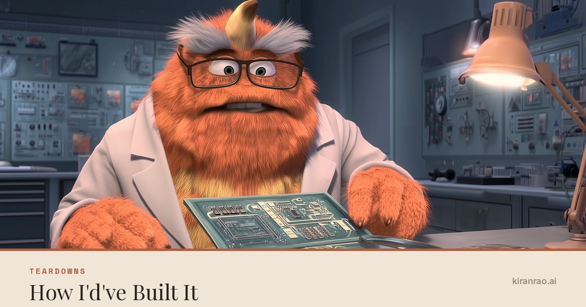
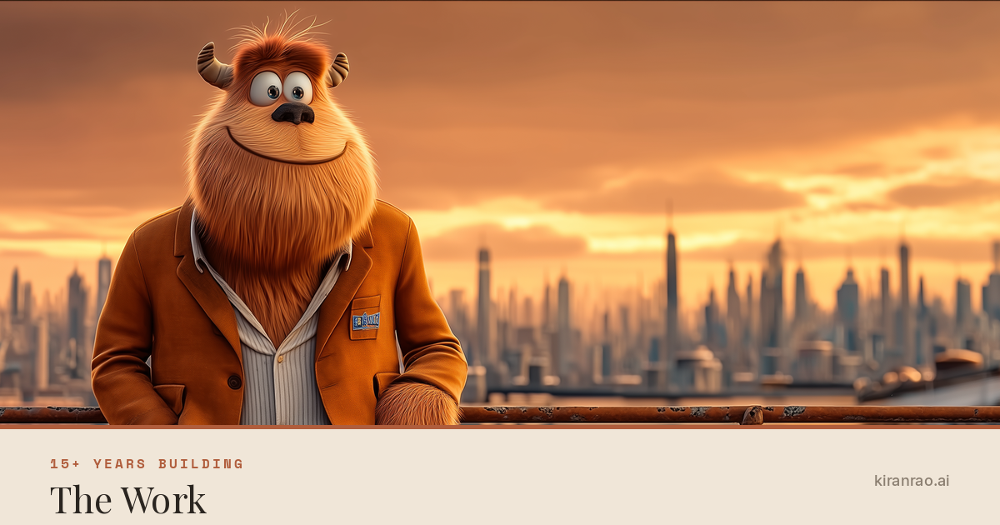
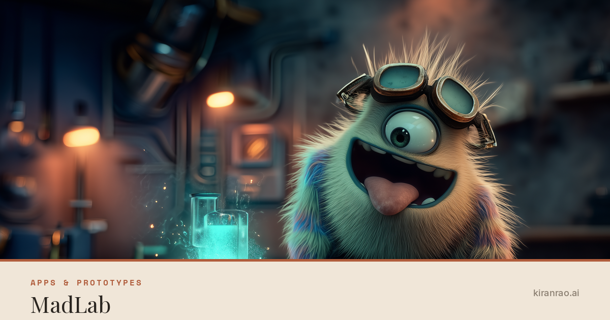
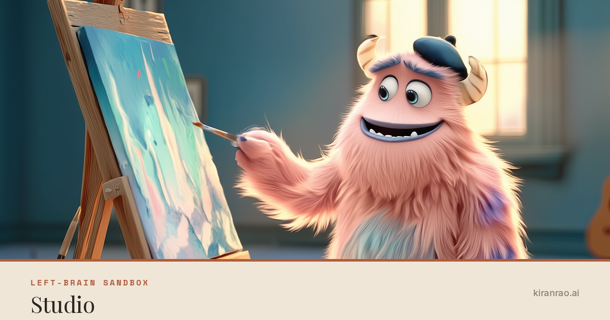
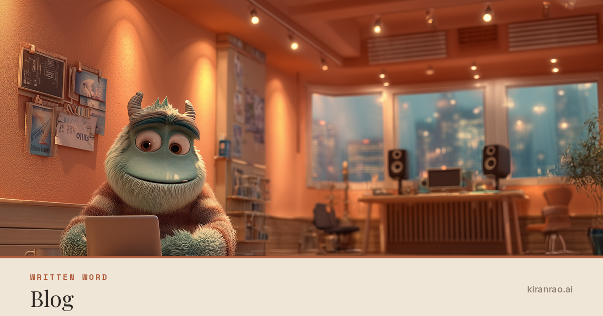
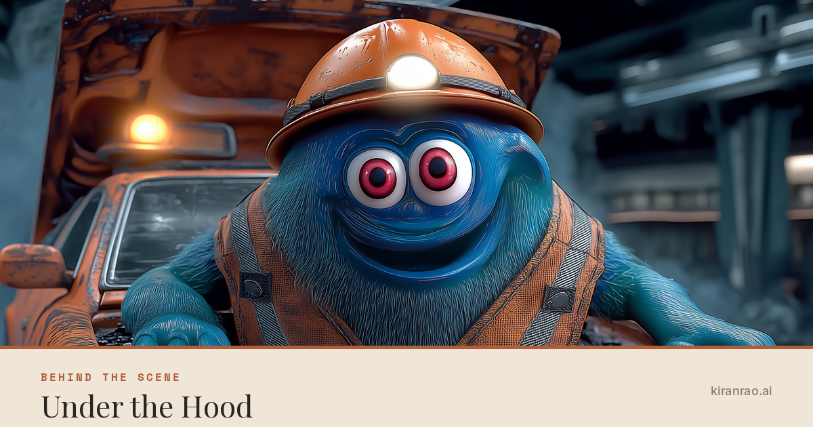
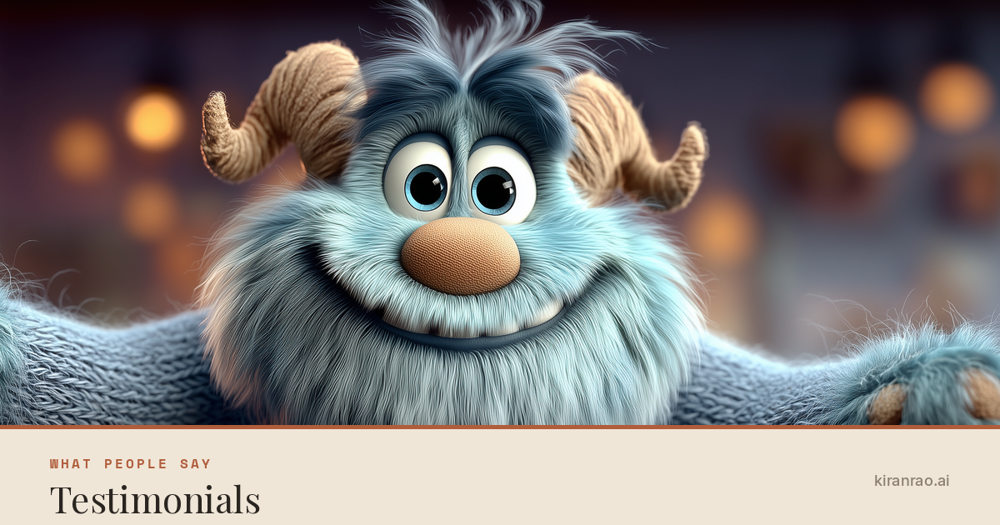
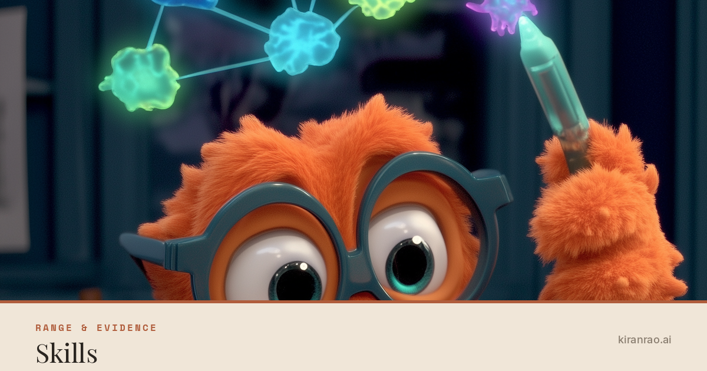
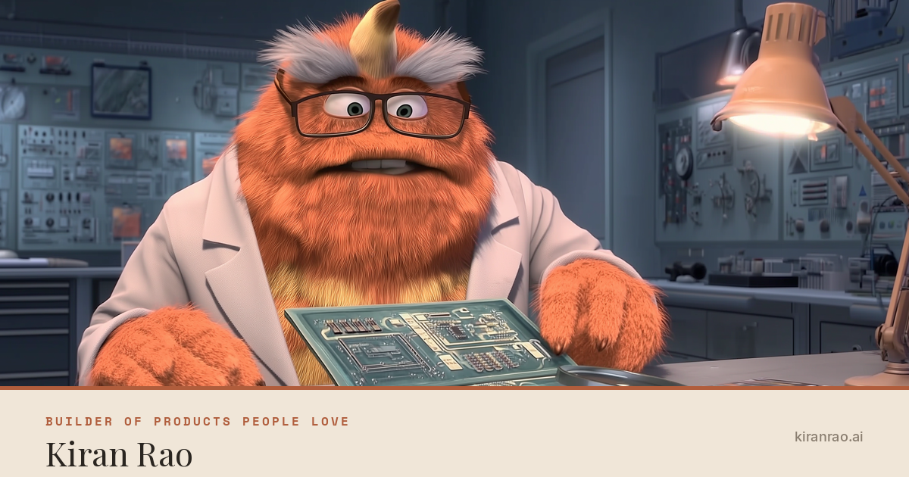
| Asset | Used by | Base image | Eyebrow | Title |
|---|---|---|---|---|
| og-teardowns.png | All teardown pages + how-id-built-it.html | analyst-hero-2-1.png | Teardowns | How I'd've Built It |
| og-career.png | career-highlights.html, the-work.html, track-record.html | veteran-hero-2-1.png | 15+ Years Building | The Work |
| og-madlab.png | madlab.html + prototype overview pages | tinkerer-hero-2_1.png | Apps & Prototypes | MadLab |
| og-studio.png | studio.html | artist-hero-2_1.png | Left-Brain Sandbox | Studio |
| og-blog.png | blog-podcast.html + all blog posts | blogging-monster2.png | Written Word | Blog |
| og-underhood.png | under-the-hood.html | engineer-blog-2_1.png | Behind the Scene | Under the Hood |
| og-testimonials.png | testimonials.html | connector-wider-3_1.png | What People Say | Testimonials |
| og-skills.png | skills.html, learning.html | octupus_skills1.png | Range & Evidence | Skills |
| og-homepage.png | index.html + fallback for misc pages | analyst-hero-2-1.png (placeholder) | Builder of Products People Love | Kiran Rao |
- Status
- shipped · 9 cards generated, 37 pages wired with og:image meta tags
- Specs
- 1200×630 (1.91:1). PNG. ~250-400KB each.
- Layout
- Full-bleed bento hero image as background. Bottom band (120px tall) in cream
#F0E6D8with thin rust top accent line (4px). Band content: eyebrow (Space Mono Bold 16px, rust, letter-spaced) + title (Playfair Display Bold 44px, charcoal) on the left. Byline "kiranrao.ai" (Inter Medium 18px, muted) right-aligned. - Output folder
images/og/- Generation
- Programmatic via
scripts/generate-og-cards.py. Re-run to regenerate any/all cards. Add a new card type by appending toOG_CARDSlist. - Wiring
scripts/wire-og-cards.pyupdates meta tags across pages. Per-pageog:titleandog:descriptionstay page-specific; only the image and width/height/alt metas are managed by the script.
Error page imagery
Single shared monster illustration used across all error pages (404, 500, 503, maintenance). One image, four pages, different copy per page.
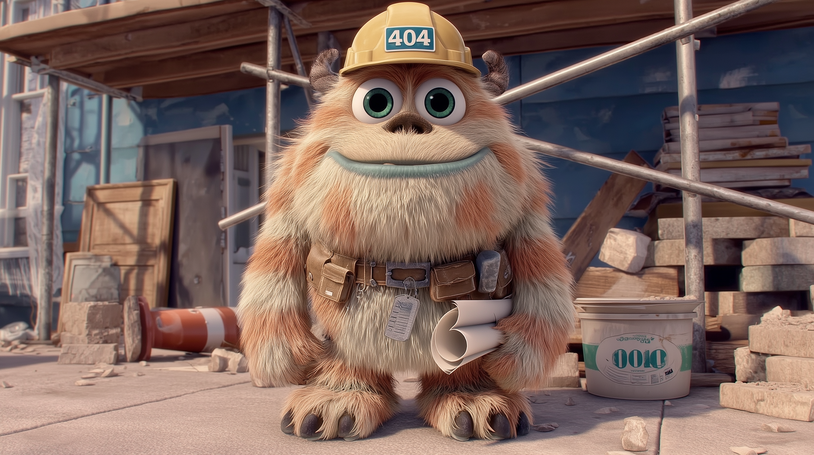
| Asset | Status | Used by | Specs | Output |
|---|---|---|---|---|
| 404 monster | shipped | 404.html, 500.html, 503.html, maintenance.html (shared via error-styles.css) |
~16:9. Construction-monster Pixar character with hard hat + tool belt + blueprint, on half-built scaffolding. Warm golden lighting. | images/404image.png |
"What is this site?" handout (1)
| Asset | Status | Purpose | Specs | Output |
|---|---|---|---|---|
| Site explainer image | todo | Pasted in 1:1 DMs and warm intros. Explains the site at a glance. | 1:1 square. Mid-century editorial illustration of a creative workshop / studio space. Abstract flat shapes. Bottom-third dead zone for typography. | images/marketing-kit/handout/handout-01-what-is-this.png |
Mood board (8)
Visual reference set for the brand identity section of the marketing kit case study. Each image is a single bold idea — concentric circles, layered horizons, organic curves, etc. Together they communicate the aesthetic vibe.
| # | Status | Concept | Output |
|---|---|---|---|
| 01 | todo | Concentric circles with intersecting rectangles | images/marketing-kit/mood-board/mood-01-concentric.png |
| 02 | todo | Layered horizon with single floating geometric form | images/marketing-kit/mood-board/mood-02-horizon.png |
| 03 | todo | Organic curved shapes balanced against sharp lines | images/marketing-kit/mood-board/mood-03-organic.png |
| 04 | todo | Typographic-feeling forms suggesting a single bold letter | images/marketing-kit/mood-board/mood-04-typographic.png |
| 05 | todo | Nature abstracted into mid-century shapes (Charley Harper) | images/marketing-kit/mood-board/mood-05-nature.png |
| 06 | todo | Bold diagonal energy with restrained background | images/marketing-kit/mood-board/mood-06-diagonal.png |
| 07 | todo | Concentric forms suggesting motion and orbit | images/marketing-kit/mood-board/mood-07-orbit.png |
| 08 | todo | Architectural — windows, doorways, frames as pure geometry | images/marketing-kit/mood-board/mood-08-architecture.png |
Hero cinemagraph
Animated version of the homepage hero scene. Subtle motion only — steam from coffee mug, dog breathing, light shift. Replaces the static <picture> with a <video> in index.html lines 147-152.
- Status
- parked — full spec in
docs/Website/Homepage/CONTINUATION-BENTO-HERO-COMPLETION.md - Tool
- Runway Gen-4 image-to-video
- Source
images/final-hero-image3.png- Specs
- 10-second seamless loop. MP4 H.264, target <3MB. Optionally also WebM (VP9) for Safari. 1920×1080 or 2560×1440.
- Output
videos/hero-cinemagraph.mp4+.webm- Companion
images/hero-poster.jpg(<200KB) — poster frame for autoplay fallback- Animation rules
- Only 3 elements move: steam from mug, dog breathing, subtle warm light shift. Everything else stays still.
Manifesto / "Why this site exists" video
45-60 second click-to-play video below Fenix intro on homepage. Section C10. Shell already shipped with placeholder play button + "Why this site exists." tagline. Awaiting actual video asset.
- Status
- parked — shell built (21:9 dark canvas, play button, tagline). Awaiting video. Outstanding decision: HeyGen avatar vs Runway abstract vs self-filmed.
- Length
- 45-60 seconds. Click-to-play, NOT autoplay.
- Script
- Locked in
docs/PersonaPicker/PERSONA-PICKER.md§9 (the conversational manifesto) - Tool options
- (a) HeyGen Pixar avatar with lip sync + AI voice, (b) Runway abstract motion + voiceover, (c) self-filmed
- Output
videos/manifesto.mp4+images/manifesto-poster.webp- Insertion point
index.htmlline ~340 (HTML comment marks the<video>insertion location)
Stationery
Personal-brand stationery for in-person and formal correspondence. Mid-century editorial aesthetic, restrained palette, designer-credible.
| Asset | Status | Purpose | Specs | Output |
|---|---|---|---|---|
| Business card — front | todo | Networking, conferences, in-person introductions | 3.5×2 in (1050×600px @300 DPI). CMYK for print. Bleed 0.125 in. Front: name + role + URL + handle. Back: minimal mark or pattern. | brand-kit/stationery/business-card-front.pdf |
| Business card — back | todo | Reverse side | 3.5×2 in. Could be solid color, brand mark, geometric pattern, or QR code linking to kiranrao.ai | brand-kit/stationery/business-card-back.pdf |
| Letterhead — US Letter | todo | Formal correspondence, cover letters, recommendation requests | 8.5×11 in (2550×3300px @300 DPI). PDF + Word/Pages template. Header has wordmark + URL; footer has contact line. | brand-kit/stationery/letterhead-letter.pdf + .docx |
| Letterhead — A4 | todo | International correspondence | 210×297mm. PDF + Word. | brand-kit/stationery/letterhead-a4.pdf + .docx |
| Envelope (#10) | todo | Outgoing mail | 9.5×4.125 in. CMYK print-ready. Return address + small brand mark. | brand-kit/stationery/envelope-10.pdf |
| Thank-you / notecard | todo | Post-meeting / interview notes, gift cards, networking follow-up | Folded 5×7 in or flat 4×6 in. Minimal front design + blank inside or subtle pattern. | brand-kit/stationery/notecard.pdf |
Document templates
Reusable templates for any document Kiran produces — pitch decks, resume, one-pagers, proposals. The job is to make every document instantly recognizable as his.
| Asset | Status | Purpose | Specs | Output |
|---|---|---|---|---|
| Pitch deck master template | todo | Any presentation Kiran gives — talks, internal pitches, work samples | 16:9 (1920×1080) base. Master slides for: title, section divider, content single-column, content two-column, full-bleed image, big-quote, closing/CTA. Keynote + Google Slides + PowerPoint variants. | brand-kit/decks/pitch-deck-master.key + .pptx + .pdf |
| Resume / CV — designed | in progress | Job applications. The polished version of the existing resume. | US Letter + A4 versions. PDF (primary), Word (editable). One-page + two-page variants. Brand-aligned typography (Playfair for name/headers, Inter for body). | brand-kit/resume/kiran-rao-resume-2026.pdf + .docx |
| One-pager | todo | "What is this site / who is Kiran" PDF. Pasted in DMs, attached to outreach. Cross-ref Marketing → Handout (the visual version). | US Letter portrait. Hero illustration top, 3 sections (about / proof / connect), brand footer. PDF. | brand-kit/one-pager/kiran-rao-one-pager.pdf |
| Case study template | todo | Re-usable structure for write-ups (teardowns, MadLab projects, work samples). Already shipped on-site, but a PDF/doc version for offline sharing. | US Letter / A4. Multi-page. Cover + context + work + outcome + reflection sections. PDF + InDesign or Affinity Publisher source. | brand-kit/case-study/case-study-template.indd + .pdf |
| Document cover page | todo | Generic cover for any deliverable — proposal, report, sample work | US Letter portrait. Hero zone + title + subtitle + author + date. Reusable as page-1 across docs. | brand-kit/templates/cover-page.pdf + .indd |
| Press release template | todo | Formal announcements — product launches, awards, talks, press mentions. Industry-standard format readable by journalists. | US Letter portrait. Standard PR layout: dateline + headline + subhead + lead paragraph + body + boilerplate (3-line "About Kiran") + contact info. PDF template + Word .docx (editable). | brand-kit/templates/press-release.docx + .pdf |
| Resume — Google Docs version | todo | Quick-edit alternative to InDesign master. For tailoring resume per application without design software. | Google Docs template URL. Same brand structure as InDesign master: Playfair name + headers, Inter body, restrained palette. Single-page + two-page variants. | Google Doc URL stored in brand-kit/resume/ README |
| Cover letter — Google Docs version | todo | Editable cover letter template in same brand language as resume. Pre-formatted block + signature line. | Google Docs URL. Header reuses letterhead design. Body Inter 11pt. Closing block with sign-off + URL. | Google Doc URL stored in brand-kit/letters/ README |
| Notion templates (resume, one-pager, case study) | todo | Notion-native versions of the core docs for people who live in Notion. Easy duplicate + edit. | 3 Notion templates published as duplicate-able pages. Brand-aligned cover images + section structure. | Notion URLs stored in brand-kit/notion/ README |
| Invoice / receipt template | parked | Only if Kiran ever bills (consulting fee, speaking fee, freelance). Standard invoice format. | US Letter PDF + Excel/Numbers. Header (brand) + bill-to + line items + subtotal/tax/total + payment instructions + footer with W-9 reference. | brand-kit/business/invoice-template.xlsx + .pdf |
Email assets
| Asset | Status | Purpose | Specs | Output |
|---|---|---|---|---|
| Email signature — image | todo | Bottom of every email Kiran sends | ~600×150px. PNG with transparent background OR cream background matching site. Includes name + role + URL + small brand mark. | brand-kit/email/signature.png |
| Email signature — HTML | todo | Native HTML signature (degrades gracefully on plain-text clients) | Inline CSS. Plain HTML — no images required to render. Links: site, LinkedIn, Twitter. | brand-kit/email/signature.html |
| Newsletter header | parked | If/when Kiran starts a newsletter | ~1200×400px. Brand-aligned hero illustration + newsletter name in Playfair Display. | brand-kit/email/newsletter-header.png |
Speaking / events
Assets for when Kiran speaks at conferences, podcasts, or panels.
| Asset | Status | Purpose | Specs | Output |
|---|---|---|---|---|
| Speaker bio image | todo | Conference programs, podcast notes, speaker pages | Square (1200×1200) + 16:9 (1920×1080) variants. Real photo of Kiran in environmental context (workshop / studio). Brand-aligned background or treatment. | brand-kit/speaking/speaker-bio.jpg (multi-size) |
| Talk title slide template | todo | Opening slide template for any talk | 16:9 (1920×1080). Talk title + speaker name + venue + date layout. Inherits pitch deck master. | brand-kit/speaking/title-slide-template.key |
| Speaker placeholder Zoom background | todo | Virtual meeting background for podcasts, recorded interviews | 1920×1080 (Zoom standard). Brand-aligned subtle background that doesn't fight Kiran's face on camera. | brand-kit/speaking/zoom-background.jpg |
| Conference badge / lanyard art | parked | If Kiran organizes / hosts an event | 4×6 in. Print-ready CMYK. | brand-kit/speaking/conference-badge.pdf |
| Podcast cover art | parked | If/when Kiran starts a podcast. Apple Podcasts requires this format for show artwork. | 3000×3000 PNG. Square. Show title in Playfair Display + visual element from brand language. Apple Podcasts compresses, so test legibility at 60×60px (iPhone Listen Now). | brand-kit/podcast/podcast-cover.png |
| Podcast episode artwork template | parked | Per-episode artwork variants once podcast launches | 3000×3000 PNG template. Episode title placeholder + episode number + show mark. | brand-kit/podcast/episode-template.psd + .pdf |
Platform & community presence
Brand presence in the communities, workspaces, and platforms Kiran participates in. Avatar + workspace icon variants per platform.
| Asset | Status | Purpose | Specs | Output |
|---|---|---|---|---|
| Brand avatar — square mark | todo | Profile picture alternative when not using a headshot. Used on LinkedIn, Twitter, GitHub, Slack, Discord, Notion. Recognizable at 32px (Slack sidebar size). | Square. Multiple sizes: 256, 400, 800, 1024, 2048px PNG (transparent + solid-cream variants). Logomark or initials on brand color background. | brand-kit/avatars/brand-avatar-{size}.png |
| Headshot avatar — round-crop set | todo | Profile picture using real headshot. Same source photo, multiple platform-optimized crops + sizes. | Square crops at: 256, 400, 800, 1024, 2048px. PNG. Optional: round-crop variants for platforms that don't auto-circle. | brand-kit/avatars/headshot-{size}.png |
| Workspace icon — Slack | todo | If Kiran ever runs a Slack workspace (community, project, team) | 512×512 PNG. Square. Solid background. Slack auto-rounds corners. | brand-kit/platform/slack-workspace.png |
| Workspace icon — Discord | todo | Discord server icon if Kiran runs / participates in a Discord | 512×512 PNG. Square. Discord renders as circle. | brand-kit/platform/discord-server.png |
| Workspace icon — Notion | todo | Notion workspace icon — visible on every shared Notion page | 280×280 PNG. Square. | brand-kit/platform/notion-workspace.png |
| GitHub social preview | todo | Custom social preview image for individual GitHub repos. When repo URL shared, this image previews instead of the auto-generated one. | 1280×640 PNG. Per-repo customizable: shows project name + brand mark. | brand-kit/platform/github-social-preview.png |
Print materials
Tangible items. Some practical (cards, stickers), some optional (merch, manifesto poster). Print specs included for production-readiness.
| Asset | Status | Purpose | Specs | Output |
|---|---|---|---|---|
| Sticker set (3-5 designs) | todo | Laptop, notebook, conference giveaway. Soft brand spread. | Variants: 2×2 in square + 3 in circle + 4 in die-cut. Vector source (SVG/AI). 300 DPI for production. White or transparent backgrounds. | brand-kit/print/stickers/*.svg + .pdf |
| Manifesto poster | todo | Personal manifesto rendered as a print-worthy poster. Office wall, gift, or merch. Could become the "art piece" people associate with you. | 18×24 in or 24×36 in. CMYK + bleed. Vector. Body text legible at distance. | brand-kit/print/manifesto-poster.pdf |
| Notebook cover | parked | Custom Moleskine / Field Notes branded notebook. Personal use + occasional gift. | Field Notes 3.5×5.5 or Moleskine 5×8.25. Print-on-demand via Inkpact or similar. | brand-kit/print/notebook-cover.pdf |
| T-shirt design (personal) | parked | Personal-brand tee. NOT the Studio creative parks tees — this is one Kiran would wear/give to friends. | Front print. Single-color screen print preferred (cost). 12×14 in art area. | brand-kit/print/tshirt-personal.svg + .pdf |
| Tote bag design | parked | Conference giveaway / casual merch | 15×16 in tote. Single-color print. Vector. | brand-kit/print/tote-bag.svg |
| Postcard set (4-6) | parked | Mail to friendly recruiters / network. Tactile alternative to a cold DM. | 4×6 in or A6. Front: brand image. Back: address area + handwritten message space. | brand-kit/print/postcards/*.pdf |
Brand documentation
The rules and reference material that keeps everything consistent. The doc you'd hand someone (a designer, a future-you) so they can produce on-brand work without further context.
| Asset | Status | Purpose | Specs | Output |
|---|---|---|---|---|
| Brand guidelines doc | todo | Single source of truth for the brand. Logo usage, color palette, typography, voice, photography. The "hand to a designer" doc. | PDF (primary, ~12-20 pages) + on-site web version. References VISUAL-STANDARDS.md + CONTENT-STANDARDS.md. |
brand-kit/docs/brand-guidelines.pdf + /brand on-site |
| Voice & tone guide | todo | How Kiran writes — formal vs casual, in different contexts. Examples + before/after. | PDF or web. Cross-references existing voice samples in marketing kit case study. | brand-kit/docs/voice-tone.pdf |
| Logo lockup variants | todo | All logo variations as standalone files: primary, monochrome black, monochrome white, knockout, square mark only, wordmark only, stacked, horizontal. | SVG (master) + PNG (transparent, multiple sizes: 200, 400, 800, 1600px wide). | brand-kit/logo/*.svg + .png |
| Color palette spec sheet | todo | Single page reference of every brand color with hex / RGB / HSL / CMYK / Pantone equivalents. For print + digital + designer handoff. | PDF, single page. | brand-kit/docs/color-palette.pdf |
| Typography spec sheet | todo | Type system reference — fonts, weights, sizes, hierarchy, per-card stat fonts. | PDF, single page. | brand-kit/docs/typography.pdf |
| Custom icon set | todo | Consistent icon vocabulary across site UI, docs, decks, slides. Replaces ad-hoc emoji and stock icons. | SVG set. ~24-32 core icons covering: navigation (home, search, menu, close), content types (teardown, blog, prototype, studio), social (LinkedIn, Twitter, GitHub, email), UI controls (arrow, chevron, plus, check), and brand symbols (workshop tools, abstract marks). Stroke-based, 2px stroke at 24px base. Single-color (charcoal) with brand-color variants where called for. | brand-kit/icons/ui/*.svg + sprite.svg |
| Pattern library | todo | Repeating background patterns derived from the brand mark and geometry. Used for letterhead backings, social posts, document covers, swag, sticker variants, packaging. | 6-8 seamless tiling patterns as SVG. Each available in 3-4 colorways (cream-on-charcoal, charcoal-on-cream, amber-on-cream, teal-on-cream). Tile size guidelines for different scales. Examples: dot grid, geometric weave, abstract motif from logo, mid-century scattered marks. | brand-kit/patterns/*.svg + colorways/ |
| Photo treatment / filter preset | todo | Consistent grading for any real photos used (headshots, lifestyle, in-the-studio shots, conference photos). Makes any photo feel "from kiranrao.ai" regardless of source. | Lightroom preset (.xmp) + Photoshop action (.atn) + LUT (.cube) for video. Defines: warm color shift toward amber/cream, lifted blacks, slight grain, subtle vignette, S-curve contrast. Mobile-Lightroom-friendly variant for on-the-go editing. | brand-kit/photo/kiran-rao.xmp + .atn + .cube |
| Watermark | todo | Sign original creative work, downloadable PDFs, Studio outputs that could be shared widely. Asserts authorship without dominating the work. | SVG (master) + PNG with transparency (multiple sizes). Two variants: signature-style mark (initials) for creative work + URL-style mark ("kiranrao.ai") for documents. Sized for corner placement at 1-2% of canvas. Light + dark versions. | brand-kit/watermark/signature.svg + url-mark.svg + .png variants |
Headshot variants
Real photos of Kiran for different contexts. Currently the site uses one or no profile photos.
- Status
- todo
- Variants needed
- Formal (LinkedIn). Casual (podcast appearances). Action (speaker bio). Environmental (in workshop / studio).
- Specs
- Multiple sizes per shot: 200×200, 400×400, 800×800. Square crop + freeform crop variants.
- Tool
- Real photoshoot (preferred) or AI gen (Photoshop generative fill, Midjourney --p)
Press kit assets
Centralized folder of bio + photos + logos for press / podcast / conference inquiries. Set up before needed.
- Status
- todo
- Components
- Bio variants (short/medium/long). Headshots in multiple crops + sizes. Logo files (PNG + SVG, color + monochrome). Approved screenshots / hero shots.
- Output folder
press-kit/at site root, accessible at kiranrao.ai/press-kit/- Time to build
- ~30 min once headshots exist. Bio writing ~1-2 hours.
Print materials (optional / future)
- Status
- parked — only if/when needed
- Possible items
- Business cards (when networking). Stickers (for laptops, conferences). Conference badge / lanyard art (when speaking). Branded notebooks / merch (low priority).
- Print-ready specs
- CMYK color space. Bleed area. 300 DPI minimum. Vector preferred (SVG / PDF / AI).
Social media campaign concepts (8-10)
Hypothetical Instagram / Twitter / LinkedIn posts designed as a coordinated launch campaign. Lives in the marketing kit case study as evidence of marketing thinking, never deployed as actual campaign.